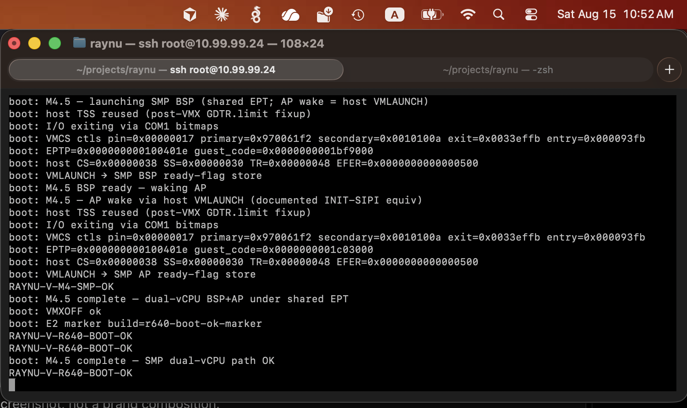

What actually happened on iron — not a roadmap slide. Each story is
dated, marker-backed, and honest about residuals. Latest close:
2026-10-13 Ubuntu 26.04 on a 10 GiB tail of RAYNU-SPARE —
c3a70e62, vikkp@raynusrv2:~$, then the
library signature sector cleared. Mount Everest stays closed on
f72b4276. The guest NIC is not closed.
2026-10-19 · docs · no iron · b91f1292, e94b47ea, 250dc961
A catalog, and an order to build it
The R640 was waiting on a cable. There was nothing to flash, so
the afternoon went into a question the lab had been answering
piecemeal for a month: what does a person expect from a hypervisor
they can leave alone, and which of those things have we actually
seen on this machine?
b91f1292 wrote it down as one catalog. Letters A
through K, 129 rows. Twenty-six had lived. Four were in flight.
Ninety-nine were only named. Shipment 1, the dedicated box, is 67
of them. The count is a table of contents. It is not a score.
HDA stayed 99%.
A catalog is how a buyer reads. It is a bad way to decide what to
pick up on a Tuesday, because the dependencies cross the letters
and the rack is one machine. e94b47ea gave the work
an order: waves 0 through 17, and a verification wave that runs
beside them. Each wave has one iron thread. Everything else in
the wave can be done while that thread waits. The tool prints the
current wave. That afternoon it printed wave 1, Close M8.9, iron
thread D3 — the port with no cable.
250dc961 put the same instruction where the next
session would see it: on “what next”, run
./tools/sync-sku-site.sh --next and answer from the
printout.
The same day had a second fact, older than the catalog.
Main had fallen 238 commits behind a chain of stacked branches,
from ac3b92cd to 250dc961, because each
new branch had started on the previous one.
7b34cf18 split the public record into three pages
with three jobs: HDA is how we got here, the SKU page is what you
get and what is being built, LOI is whether we are ready to talk.
155c49c7 wrote the rule that was supposed to make the
lag impossible to repeat. Branch off main. Merge when the gate
closes. Never chain. It also recorded that 165 of those chained
pull requests were closed.
Nothing in the catalog changed status because a story was written
about it. Everest stayed closed. The rollback for that loop stayed
v0.1.0-everest-closed.
This one is open. The close we wrote down wants a frame from the
guest’s own MAC to leave :39, and a login to that
address from another machine. Neither has been seen.
A form that remembered
Create still made a disk with no network card.
a5bf8d4e kept a NIC record for the spare on the host,
and did not write the sector. fcdec904 put the form
on the page: mode, address, Save. Save it, refresh the guest list,
and the MAC came back. d2ee5015 could fill the same
blanks from a DHCP offer and then stop, on purpose, before Save.
19ada6c9 aimed that discover at the other LOM port,
function 1, 01:00.1, the address that ends in
:39, and refused to send it out the port the SPA
already owned. The APE lock stayed with iDRAC. On that commit the
rings were not programmed yet, and an offer still did not Save.
The queue that could not wake itself
Then the guest did send something, and the console went quiet.
For a week the connect sat in poll_idle.
0dcc1cea finally printed the minutes after the first
frame. One IRQ 11 and one timer tick got in
(take11=1 take0=1 inj=2). After that the inject path
had nothing it was willing to deliver
(skip_idle=385). The slave interrupt controller sat
with 0x08 in service and the virtio-net line unread.
Linux sent a specific end-of-interrupt, 0x60, and the
master went from 0x05 to 0x01: the wrong
bit cleared, the timer left in service, no more ticks.
c9f4451a fixed that handshake. The chain looked
healthy — idtv=1 reinj=1 eoi_s=21 take0=149, the
clock keeping up with the PIT — and then, every five seconds, the
kernel gave up on its own transmit queue:
NETDEV WATCHDOG: transmit queue 0 timed out
Linux stops a virtio transmit queue when fewer than 19 descriptors
are free, and it only wakes the queue again at 19. An eight-entry
ring never has 19 free. The watchdog was the queue noticing that
it could not be woken. 11cd3ed9 made the rings 256
deep, the size QEMU had been using all along.
The page that already knew
d7e2e24f brought the guest up clean. No watchdog.
COM2 counted TX 15 RX 0. The guest asked for
10.99.99.1 and the answer was FAILED.
The connect ended exit:124.
iDRAC had been showing the reason for the whole experiment.
Integrated NIC port 4, B0:26:28:5C:5A:39, Link Down,
auto-negotiation Disabled. Port 3, the SPA, Up at 1000 Mbps. We
had armed a MAC, set a port mode, and counted fifteen frames on a
PHY that had nothing plugged into it.
The story stops on that screen. D3, D7, and D8 stay in flight.
HDA stays 99%. Everest stays closed.
2026-10-04 – 2026-10-13 · Dell PowerEdge R640 · library ISO on RAYNU-SPARE · EFI c3a70e62
Ubuntu, from the library, to a prompt
On 4 October we wrote the bar down and admitted we were not at it.
ADR-020 (18d136c2) calls the machine RayNu VM
Generation 1: one specified guest that boots an operating system
the way the vendor shipped it. Phases 0 through 5. What had lived
was a patched Alpine, reboot to its own disk, with the patcher and
the auto-answer still on the product path.
The Ubuntu file was already on the spare.
93088c32 had stored
ubuntu-26.04-live-server-amd64.iso. The page sat at
ISO 100%. COM2 had said library CD stored.
The next boot, 27d4e540, attached that file as
vdb and then booted the Cruzer Alpine anyway
(cd_bytes=1042284544). The disc we had spent the
upload on was not the disc the firmware opened. After that, the
file waits until Guests chooses the ISO row.
Three ways to refuse a shim
Ubuntu’s own BOOTX64.EFI is a shim, and it wanted
things Alpine had never asked for.
5cb54836 ran for 180 seconds, read zero blocks, and
spent the time in AllocatePool of type 0. We had been
declining that pool type. The next EFI serves it as loader data.
0aa0a78d got further and stopped on
MokListRT. SetVariable was unsupported.
Secure Boot’s runtime list is how a shim remembers what it has
been told to trust. We kept a variable store for the length of the
boot and minted a null protocol handle.
8822dbfa reached the open of grubx64.efi
and came back Not Found, blk_rd=0. The path we had
published was the CD-ROM device itself. Shim turned that into a
directory prefix and looked for GRUB in the root of the FAT.
On this disc grubx64.efi sits beside
\EFI\BOOT\BOOTX64.EFI. The next EFI publishes that
file node, and opens a relative name against the directory handle.
A menu, a silent kernel
The menu did appear. On 90f64bcf GNU GRUB 2.14 was
counting down, at 22 seconds, when our wall cap fired at
wall_ms=180007 with only 17 block reads behind it.
We gave the next boot ten minutes. 9147cad0 used them
up and died at GRUB’s own 1s,
wall_ms=600005. A second on that menu was about
twenty seconds of the rack. That clock has its own story.
When the menu could finish, the kernel left without saying
goodbye. 87979e32 reached ExitBootServices and virtio
DRIVER_OK, and COM2 never printed
Linux version. The line in the stock
grub.cfg has no serial console. We append
console=ttyS0 for the library CD, at
StartImage, and we do not write it back into the
stored file.
That was not enough. GRUB 2.14 does not hand the kernel to
StartImage. It jumps. 6865b5ab and
4e9ebcdb both reached the same silence, and the block
reads told us the menu file was coming through
BlockIo, out of the ISO9660 directory, where our
LoadOptions never went. So the read view of that
linux line grew console=ttyS0, and the
bytes on the spare stayed the bytes the operator uploaded.
A CPU that introduced itself wrong
a71fbb3d finally printed
Linux version 7.0.0-14-generic, and then the initrd
unpack failed with a write error. We had told the guest it had
256 MiB. About two gigabytes were already mapped behind it.
6a7e72b1 gave it the tail
(bytes=2113929216 tail=1845493760), unpacked the
initrd, and died in /init on a sentence we had not
seen from Alpine:
CPU ISA level is lower than required
glibc wanted AVX, and our CPUID had not told it the OS would save
that state. The next EFI publishes XCR0.
8c6bfa85 lived XCR0 at 0x2ff
and libc refused again. This time the vendor string was
GenuineIntEl. We had been masking the X2APIC bit on
every leaf, and leaf 0 is where the twelve-character vendor lives.
Flip one character and userspace never bothers to read leaf 1.
The mask moved to leaf 1 only.
1b01c2d8 got a vendor glibc would believe. udev
started. Then a filesystem notification waited forever in
synchronize_srcu. Linux 7 starts that grace period
with a self-IPI, and we had been throwing local-APIC writes away.
6d630acc delivered self-ipi vec=0xf6
four times. Casper mounted. The getty came up.
Welcome to Ubuntu 26.04 LTS!
The tty was waiting for cloud-init. There is no guest
NIC on this boot, and cloud-init was waiting for a network that
was never going to answer. 9df8d68a put
cloud-init=disabled on the kernel line. The wait
stayed. 5f24b74e reached cloud-init’s own “final” and
still did not draw the language list. The next EFI adds
ci.ds=None and masks the casper checksum and the
snap seed.
Fourteen hours of one sector
674f74c8 drew the language list. Curtin started
extracting onto vda. Then the familiar line:
Stage 46 hold, at the sixteen-million-exit cap, in
the middle of a copy. 806d8961 raised the cap to
256 million. The language list came back. Installing system
started. The log did not move for about fourteen hours, and there
was no hold this time. The guest was working. Every sector was
its own trip through the PERC mailbox.
c4a3ef1b posts 64 KiB when the spare allows it, 4 KiB
when it does not, one sector when it must. The copy finished. The
kernel was on the disk. GRUB’s install then failed, and dmesg had
the reason: Unable to switch EFI into virtual mode
(status=8000000000000003). That status is
SetVirtualAddressMap unsupported — the same runtime
call we had been papering over with efi=noruntime on
Alpine, which cannot be injected into this ISO.
996492fc accepts the call and rewrites the runtime
pointers. Subiquity reached Installation complete.
The disk that could not find its own GRUB
Start on the new row booted the wrong Alpine. The Ubuntu disk was
the next GPT, ten gibibytes at the 18 GiB mark. When
1c278f67 started that row, it opened the removable
shim and the shim said Failed to open grubx64.efi.
The GRUB Ubuntu had installed was
\EFI\ubuntu\grubx64.efi, not the one beside
BOOTX64.EFI.
252c04cd opened grubx64.efi and stopped
at grub>. Shim had found the file. Our buffer load
had then cleared LoadedImage.FilePath, so GRUB woke
up with no prefix and never opened its own
grub.cfg. 9abd4870 staged the shim
again, opened GRUB again, and stopped at the same prompt with no
FilePath line at all. The next EFI skips the shim when
grubx64.efi is already there and launches that file
with the path already published.
89a67dc4 did exactly that, printed the stub
search.fs_uuid 6ded2137-de53-4881-93df-8bbdeb2b20ec,
and stopped at grub> once more. The device handle
was the whole disk. GRUB went looking for its files at LBA 0.
The ESP is partition 1, at LBA 2048. The next EFI gives the loader
that partition’s handle, so GRUB can call the disk
hd0,gpt1.
An initrd that knew its own length
1149d279 drew the menu. *Ubuntu. Then
the stub, every time, with the same status:
Failed to load initrd: 0x8000000000000001
The ESP handle was alive (part=1 lba=2048). The
failure moved one function call at a time, and the number never
changed. GRUB’s LoadFile2 returns not-found unless the path
remainder is an End node, and the stub treats any other answer to
its size query as a load error. 4f65682f got
matched=20 remainder=End and the same error, because
this was not the LoadFile2 struct GRUB had
registered. fa3ccb64 entered that struct
(buf=0x0, then buf=0x415f000) and the
copy came back buffer-too-small, which the stub reports as the
same load error. 826ca6e9 printed
sz=34338680 — the length was real, there was no
blk fail — and still returned the error. The next
EFI reads that ext4 file into the stub’s buffer and returns
success from the shim.
The prompt
c3a70e62, build: sha=c3a70e623aec, choice
4. The library file was still waiting. Clear ISO had not been
clicked. The ISO-INSTALL-OK in this log is the
firmware handing off, the same words as an install, a different
event.
initrd ext4 bytes=34338680 name=initrd.img-7.0.0-14-generic
RAYNU-V-RAYNU-F-EBS-OK
Linux version 7.0.0-14-generic
root=/dev/mapper/ubuntu--vg-ubuntu--lv
Freeing initrd memory: 33536K
Welcome to Ubuntu 26.04 LTS!
vikkp@raynusrv2:~$
Then, on the same COM2, after the prompt:
boot: M8.8 library ISO cleared (signature sector only; disks unchanged)
The wipe is one sector, the ISO signature. UBUNTU0, the 8 GiB
window, and the Ubuntu disk stay. vda is 10 GiB,
vda1vda2vda3. The 2.9 TB
virtual disk is still hidden behind that tail.
The login is real, and the bar from 4 October is still ahead of
it. The stored ISO was the vendor’s file. The boot that reached
the prompt had appended console=ttyS0 on the way, and
the Alpine answerer is still in the tree for the other disc.
Unmodified media stayed at 25 on the login row. Everest stays
closed on f72b4276. The tag for this EFI is
v0.1.0-m8-8-ubuntu, CI 38454398693, the
rollback when a later flash misbehaves. GitHub Latest stays the
Everest pin.
GRUB counts down in its own seconds. Twice, a fortnight apart, we
watched that countdown and a wristwatch disagree, and both times
the prompt at the end was grub>.
The only sector we were willing to mention
c4a41a17 found the installed Alpine and stopped at the
prompt. We had taught that EFI to speak up once, the first time a
read went past the GPT pin, and then to be quiet. The one line it
printed was ours: the firmware, staging
BOOTX64.EFI, reading the FAT boot sector. GRUB’s own
reads came after, with no serial left to name them.
boot: Stage 46 disk past pin lba=2048 n=512 ok (not ISO-INSTALL-OK)
boot: RayNu-F found \EFI\BOOT\BOOTX64.EFI bytes=139264 (F7 disk; not ISO-INSTALL-OK)
image=DISK-BOOTX64
No wall-cap line. The operator powered the machine off at the
prompt.
Boot 2 of the soak EFI, e5cca2e0, with
usbsoak.txt taken off the stick, staged the same file
and stopped in the same place. This time the cap spoke.
RayNu-F stop wall-cap exits=301551616 wall_ms=180005 svc=301551566 svc_err=1 conout_ok=1 blk_rd=33 blk_wr=0 allocs=6 free_pages=62553
Stage 46 product ISO hold
Three minutes of wall time. Thirty-three block reads.
blk_rd=33 is the same count as d60431ee,
the boot where a RAM pin had been serving LBA 0 through 33 and
GRUB had never been allowed a sector past it. The function we had
named “past pin” went back and read LBA 0 again, inside GRUB’s
first read outside the pin. Nothing was written. The Toshiba was
the same disk we had started with. Nobody got a login.
Twenty wall seconds to a GRUB second
The Ubuntu menu met the cap from the other direction.
90f64bcf drew GNU GRUB 2.14. The countdown said 22
seconds. The wall said wall_ms=180007, and only 17
blocks had been read. We raised the cap to ten minutes so a 30
second menu, and the kernel read after it, could finish.
9147cad0 spent the ten minutes and died with GRUB
still showing 1s. wall_ms=600005.
blk_rd=17. A second, to GRUB, had been about twenty
seconds of the room. PIT channel 2 is how that firmware calibrates
a delay, and channel 2 had not been waiting. The next EFI waits a
real 55 milliseconds on that counter. Neither of these boots
reached the kernel. The menu is a clock, and the clock was the bug.
The Overview page had two buttons and one Alpine. ADR-019 said the
Guests screen was the boot policy from here on. The proof that the
old page was not a list: open a second browser, and the machine
that is running says there are no guests. The list had been the
first browser’s memory of POST /vms.
One row, eight gigabytes
5175b3da waited. The operator pressed Start on the
row the firmware had published from the latch.
PercSpaChoice choice=1, then
DISK-BOOTX64, RAYNU-V-M8-PERC-BOOT-OK,
and localhost:~# on d43dbf07.
vda was 8.00 GiB. The page showed the spare as
3022592 MiB, with 8192 used and 8192 placeable. Someone could have
asked for 10240 and been refused. They did not. Windows on the
form stayed refused. One RayNu-F still owns the only CPU we give
a guest.
A second disk, past the window
The free tail had been a number on the page. 67bdb0d9
made it a disk: choice 3, guest LBA 0 at spare offset
8589934592, [vda] 10.0 GiB, UUID
ee851fd5 written. Reboot the guest while that choice
is still set and you are back on the ISO. The hypervisor has to
boot again before it will pick the installed system.
f44ba647 was that later boot. Choice 4,
DISK-BOOTX64, ee851fd5, ten gibibytes,
localhost:~#. Stop was on the screen. Once Linux had
the machine, that EFI never read it. The button had been pressed
into a path the guest had already left.
The command we stopped typing
752586b9 booted the ISO onto the tail on purpose, and
then declined to run the installer. Choice 3,
ISO-BOOTX64, [vda] 10.0 GiB. The motd
offered setup-alpine. COM2, a moment later:
boot: perc SPA linux_iso — setup-disk withheld
Login still receives root. The ISO is still
serial-patched. ee851fd5 was mounted, recovered its
journal, and unmounted. The 8192 MiB reinstall of the old window
was not the click. Unmodified media moved from 20 to 25 on the
strength of a command that was not typed. Twenty-five is a
residual with a number, and the answerer is still in the binary.
By the last week of September the chassis was already somebody’s
server. Ubuntu 26.04 lived on a PERC virtual disk called UBUNTU0,
about 400 GB, and that disk was the boot disk of the lab. Next to
it, empty, was RAYNU-SPARE, about 2.9 TB. The rule did not change all week. Do not format UBUNTU0. Do not
open the H840. Do not Clear Configuration again.
Two cards, one name
The first EFI that went looking, cc03d01b, found two
answers and took neither.
perc fwstate refuse count=2
No BAR was loaded. The H840 in the other slot answers to the same
vendor and device, 1000:0016. Counting matches is not
choosing. 2dd2b412 chose by the subsystem: the H740P
Mini at 18:00.0, 1028:1fcd, BAR
0x9d800000. The H840 at 3b:00.0 stayed
unmapped. What we read at the old xscale offset,
outbound_msg_0, was 0. That zero is the xscale
register. The status lives in scratch pad 0. This EFI
printed perc fusion with post=0 and
stopped if mapped was 0.
22ce3728 read scratch pad 0 as 0xb73c0fed.
The state nibble was READY. The low sixteen bits were 4077, which
is the adapter’s max command count, and which an earlier decode
had treated as allow=0 and nearly as a reset. Queues
128. RDPQ set. mapped=1. The doorbell was not stored.
The nibble was already READY, so the next EFI posts one IOC init
and one logical-disk list, to port 0xC0, and then
waits.
83ae471e confirmed the same scratch pad and then
declined to post: perc ioc skip above4g. The DMA
buffer lived above 4 GiB, and this adapter’s scratch pad said it
would not fetch from there. Eight pages came out of the frame pool
instead, phys=0x1000000 on that boot. Still no
doorbell. 7577f934 got the answer back.
perc ioc status=0x00. Two logical disks,
n=2 pick=1. Pick 1 is the spare. Pick 0 is the Ubuntu
we had promised to leave alone.
The far end of the disk
985495be read LBA 0 and read LBA
6190268927, both with status 0x00. LBA 0
was sixteen zeros. Linux enumerated the whole spare as
[vdc] 6190268928 and logged into Alpine from the
Toshiba, because the Toshiba was still the install disk. The
marker we had minted never reached the serial port.
write_line goes quiet once Linux shares the UART.
9c37fcae printed it with the nowait path, during the
probe of vdc. A dd of the first sector
copied 512 bytes, the first 16 of them zero, in 0.029 seconds.
Read-only. The spare was still unpartitioned.
boot: perc virtio rd lba=0 ok
RAYNU-V-M8-PERC-LUN-OK
A read of an empty sector is not a boot disk. f0a7aabb
wrote one sector at the last LBA, the one furthest from UBUNTU0
and from LBA 0, and read it back.
boot: perc write rd lba=6190268927 match
RAYNU-V-M8-PERC-WRITE-OK
Status on the write was 0x00. LBA 0 was still sixteen
zeros. The guest’s virtio view of the spare stayed read-only.
Alpine was still on the Toshiba.
Eight gigabytes, and a button
The image that had reached login on the USB stick was copied into
the front of the spare. bda7a59b hid the read-only
whole-disk virtio so the initramfs would stop trying to mount it,
and booted the copy. UBUNTU0 was not written. The H840 was not
mapped. PCI listed virtio at 00:02.0 and
00:03.0. It did not list 00:04.0. There
was no [vdc].
build: sha=bda7a59bd597
boot: perc copy skip present alt=16777215
boot: perc virtio ro hidden (vda is the 8 GiB image; not PERC-BOOT-OK)
RAYNU-V-M8-PERC-WRITE-OK
RAYNU-V-M8-PERC-BOOT-OK
boot: RayNu-F found \EFI\BOOT\BOOTX64.EFI bytes=139264
image=DISK-BOOTX64
RAYNU-V-RAYNU-F-DISK-BOOT-OK
[vda] 16777216 512-byte logical blocks (8.59 GB/8.00 GiB)
vda: vda1 vda2
[vdb] 2035712 512-byte logical blocks (1.04 GB/994 MiB)
EXT4-fs (vda2): recovery complete
EXT4-fs (vda2): mounted filesystem a0ad99ac-ca25-4458-ade1-cd8599ca4928 ro
Mounting root: ok.
Welcome to Alpine Linux 3.21
localhost login: root
localhost:~# cat /proc/cmdline
BOOT_IMAGE=/boot/vmlinuz-lts root=UUID=a0ad99ac-ca25-4458-ade1-cd8599ca4928
The chassis went down and came back on the same EFI. COM2 said
perc copy skip present, which is the firmware
noticing the image is already there and refusing to write it
again. Same UUID. /dev/vda2 came back
clean, 6380/521216 files, 102913/2084352 blocks. The
Toshiba was still plugged in. The guest disk was the first 8 GiB
of the spare. The rest of the 2.9 TB stayed hidden.
8ad2ac89 stopped after HTTPS and waited. Choice 2
reinstalled that 8 GiB window and wrote a new UUID,
d43dbf07-…. A later boot, choice 1, printed
DISK-BOOTX64 and localhost login: from
that UUID, and withheld setup-disk. An unattended
power-on does not install. The tag is
v0.1.0-m8-perc-spa, CI 36362775808,
COM2 build: sha=8ad2ac89125e. It is the rollback for
that screen. It is not GitHub Latest. UBUNTU0 was the standing OS
when the week started, and it was the standing OS when the week
ended.
We already had a TLS stack. On the host, 77e3e33c put
a plaintext listen in front of the management socket and
bc640594 fed it through rustls until the SPA came back
over TCP. The host marker was
RAYNU-V-M8-TLS-FW-HOST-OK. rustls and ring could not
be linked into the EFI. The binary that boots the R640 is
uefi-bin, and those crates do not join it. CURL NOW
stayed http://. What went into the EFI was a TLS 1.2
listener written for this one handshake: one cipher, a lab
certificate, no TLS 1.3.
The minute before RayNu-F
928d6224, build: sha=928d62241967. The
PRE-EBS window was still plaintext SNP at
http://10.99.99.140:8443/, and it timed out. The
operator did not curl it. After ExitBootServices the native
BCM5720 came up, 01:00.0, MAC
b0:26:28:5c:5a:38, link up, and COM2 printed the line
we had been waiting to see change:
CURL NOW → https://10.99.99.140:8443/.
From the Mac, curl --cacert, TLS 1.2 only, cipher
ECDHE-RSA-AES128-GCM-SHA256, the name
raynu-v.lab pointed at that lease. The body was the
SPA. Then, on COM2, before the guest:
RayNu-F ran after that. DISK-BOOTX64,
RAYNU-V-M8-DISK-PERSIST-OK, Alpine at
root=UUID=dd673a9a-30c3-4acd-8d7e-9afe9313c46f. The
certificate that made the lock icon is a millicert minted for the
lab. GET / still does not ask who you are. The
minutes before ExitBootServices are still HTTP.
One handshake, and the guest beside it
A page that dies when the guest boots is not a management page.
Earlier in the week, opening Firefox had been followed by the
chassis turning itself off. 1f33eeda, CI
36137732145, leased 10.99.99.154/24,
booted the installed disk, and kept a single TLS session for the
whole time the operator looked at it. One
TCP accept. After that,
HTTP keep-alive, through Overview and through the
Activity tab, with Alpine’s login in the log and the host card
staying green. No second accept. The chassis stayed up.
RAYNU-V-M8-TLS-OK did not print, because nobody had
fetched the page before the guest started. The session was the
evidence. The tag is v0.1.0-m8-a4s. GitHub Latest
stayed v0.1.0-everest-closed.
A guest reboot was already a solved sentence. On
b661808c the installer had said it was finished, F7
had come back DISK-BOOT-OK, and the login prompt had
carried root=UUID=348005a9-25b7-4027-bc95-af9aef244c3a.
That disk lived inside the guest. Turn the hypervisor off and the
story changes. ef7e93ec had already taught us the
difference: hours of a healthy login, then Force Off, then a peek
that came back keep=0. The install had not survived
the thing that was running it.
The stick we did not reflash
4af78b43 was the UDisk already in the front port.
build: sha=4af78b4303fd. Nobody wrote a new EFI onto
it for this boot. The Toshiba, 0480:a004, came up
with the whole stick behind it,
usb I/O ready bytes=320072933376, and the guest was
offered 8 GiB of that. The peek found a GPT, an ESP, an ext4, and
installed=1. Virtio attached
keep=1 (durable LUN usb).
SPA Start. The firmware chose the installed image. COM2 went
image=DISK-BOOTX64,
RAYNU-V-RAYNU-F-DISK-BOOT-OK, and the same UUID as the
F7 install, 348005a9-…, on
[vda] 8.00 GiB, through login: root.
A journal recovery printed RAYNU-V-M7-ISO-INSTALL-OK
on the way. That line is a write during recovery, not a second
install. The marker we had minted for this moment,
RAYNU-V-M8-DISK-PERSIST-OK, was in the binary and was
not on the serial port. The auto-answer still tried
setup-disk, was told there were no disks, and did not
wipe the one that was there.
Twice, and the filesystem that knew it had been dropped
36d3b559 did it on a disk we had just installed, so
there was no argument about leftovers. Blank media, SPA Start, the
installer, Force Off. Then two boots with no browser and no curl.
boot: Stage 46 virtio-blk install disk bytes=8589934592 keep=1
boot: Stage 46 disk past pin lba=2048 n=512 ok
boot: RayNu-F found \EFI\BOOT\BOOTX64.EFI bytes=139264
boot: RayNu-F grubcfg=no (F7 disk; not ISO-INSTALL-OK)
image=DISK-BOOTX64
RAYNU-V-RAYNU-F-DISK-BOOT-OK
RAYNU-V-M8-DISK-PERSIST-OK
grubcfg=no scared us for a minute. It is the ESP
lookup. Alpine keeps grub.cfg on the ext4
/boot/grub, not on the EFI partition. GRUB complained
that it had no video mode and could not name the boot partition,
printed the menu anyway, and booted it. Both times the prompt was
localhost login: root, and
cat /proc/cmdline showed
root=UUID=a0ad99ac-ca25-4458-ade1-cd8599ca4928.
[vda] 16777216, eight gibibytes.
Boot 2 had been through another Force Off, and the filesystem
remembered. Ext4 wanted its journal. fsck cleared a dirty bit on
the FAT. The shutdown had not been clean. The clock in the CMOS
was stuck on 16 August, five weeks behind the install. Boot 3,
after the chassis itself had gone off, leased
10.99.99.150/24 and printed the marker again.
/dev/vda2 was
clean, 6380/521216 files, 102908/2084352 blocks, the
same counts as boot 2.
Opening the page on those later boots was a different story: iDRAC
logged SYS1003 and then SYS1001, the CPU
resetting and the system turning off, with no
RAC1195 in front of them to say a person had asked.
The logins that count are the ones where Firefox stayed closed.
The Toshiba behind the window is
bytes=320072933376. The guest never saw it. USB is
not the PERC, and eight gibibytes is not a datastore.
For a week the USB stack had a new branch name every time COM2
changed its mind. m8-xhci-enum.
m8-xhci-desc-retry. m8-usb-bot-csw.
m8-usb-bot-read. m8-usb-bot-firstcbw.
m8-usb-bot-nlb1. m8-usb-bot-setcfgretry.
m8-usb-bot-guest8g. Each one explained the line in
front of us and missed the next. Beside them, a pile of retries
that sounded like progress: warm,
diskprime, peekretry,
addrretry, slotretry,
nopretry, cmdptr. The boots that reached
login got there by trying again until a torn completion happened
to land whole. The soak was the decision to stop calling that a
fix.
A flag, and a disk made of RAM
5c32bd06 saw the empty file
usbsoak.txt and printed
boot: USB soak requested. Then Address Device timed
out on the two external ports, cmd=3 cmpl=0xff, with
the ports already in USB high speed. err=3 means the
enumeration never finished. The bulk pipe never started
(bot=?). There was no USBSOAK line,
because the soak only runs after a disk is ready.
With no durable disk, the installer did what it had always done.
It built a 1 GiB drive out of leftover DRAM, keep=0,
installed Alpine onto it, and a guest reboot reached
login: at UUID 4c27e121. Force Off throws
that disk away. The Toshiba was not opened. The prompt lasted as
long as the hypervisor did.
usb I/O fail err=3 bar=0x92b00000 portsc=0x0000000a00000e03 cmpl=0x00000000000303ff bot=? scsi=?
leftover install disk hpa=0x140a00000 bytes=1073741824
The completion that finished without us
1fa231df halted, and halted with no guest, which was
the first honest thing the soak had done.
USBSOAK abort — USB enumeration failed err=3.
Two theories died in the dump. BIOS SMIs were not armed
(forced=0 on the legacy handoff). A 50 millisecond
pause after reset did not change the outcome. And the No-Op timed
out — a command that does not touch a USB device at all. This was
not the Toshiba.
slotst=2 means the slot was already Addressed.
cmpl=0x13 on the retry is the controller saying so:
you cannot address a device you have already addressed.
SET_ADDRESS had completed. We had not seen the event. Every wait
in the driver read the sixteen-byte event pointer-first and
cycle-bit-last. The controller writes the whole event at once.
Catch it mid-read and you see a fresh cycle bit sitting on top of
a stale zero pointer, decide the event is not yours, and skip the
only completion you will ever get. evdeq=4 at the
No-Op “timeout” is that fourth event, consumed and thrown away.
The retries of the week before had been papering over exactly this
tear.
Two hundred and thirty-nine, and then the prompt
e5cca2e0 reads the control word first, one 32-bit
load, and stores it last when it writes a TRB. The soak ran. No
guest was started. The stick sat there while we waited on purpose.
installed=1 meant the Alpine from
928d6224 was still on the 8 GiB slice. Gaps of zero,
five, thirty, and a hundred and twenty seconds, all of them
fail=0. max_ms=0 on the later lines is a
read that finished inside a millisecond, because ok
equals n. Then the flag came off the stick, and boot
2 of the same EFI staged DISK-BOOTX64 and stopped at
grub>, blk_rd=33, inside a three-minute
wall cap. The bench had done what a bench does. It had not booted
the guest. The branch names from the week before stayed wrong.
2026-09-11 · Dell PowerEdge R640 · UDisk front USB 2 · EFI f72b4276
The SPA that installed Linux
Mount Everest was never “does it virtualize.” It was one operator
loop on a machine we own: ship the EFI, boot the R640, reach a
network UI, install a Linux ISO, reboot into that disk. On
11 September 2026, COM2 printed every marker in that sentence.
Phase A had already installed Alpine from --raynu-f
(56a3ffd, 10 September). Phase B is the product path:
no flag file, no auto-launch. The operator SPA starts RayNu-F.
Coexist, then the Mac could talk
The pin before this one listened and then the Mac got
curl: (7). Tight idle was advancing smoltcp Instant
ten milliseconds per CPU-speed tick. f72b4276 drives
coexist time from TSC. Lease this boot:
10.99.99.145:8443, LOM :38, not iDRAC.
RAYNU-V-M7-PHASE-B-SKIP-OVMF-OK
RAYNU-V-M7-PHASE-B-E4-CONTINUE-OK
HOST-NIC coexist listening on 10.99.99.145:8443
RAYNU-V-M7-HOST-NIC-HTTP-OK
VmCreated guest_id=4
VmStarted guest_id=4
boot: E4 SPA start — RayNu-F product ISO (Phase B; not SHELL; not ISO-INSTALL-OK)
Install, then the disk that came back
Alpine 3.21 live, setup-disk -m sys onto virtio
vda, then the iron-only line — the one host and CI
are forbidden to print:
RAYNU-V-M7-ISO-INSTALL-OK
Installation finished. No error reported.
reboot: Restarting system
RayNu-F relaunch after reset (F7)
GPT ESP lba=2048
RAYNU-V-RAYNU-F-DISK-BOOT-OK
Command line: BOOT_IMAGE=/boot/vmlinuz-lts root=UUID=814a97a0-d3be-4a64-8611-b3dbd9859201 …
Welcome to Alpine Linux 3.21
localhost login: root
localhost:~# cat /proc/cmdline
The installed system’s cmdline still carries the UUID GRUB wrote
on the first boot. fsck ran on ext4 vda2
and the FAT ESP. That is E5, started from the SPA, on real iron.
What we claim — and what we don’t
We claim Mount Everest closed on iron. EFI
f72b4276 / CI --run 34552377351. We do
not claim TLS, leftover-DRAM persist across a
hypervisor reboot, a guest VNC console, or cluster
features. Those are M8 (ADR-018). vMotion-like
work is M9. Overall HDA stays 99% on purpose.
Do not F11 34548550755 / 7f8dc0a9
(curl: (7)) or earlier Phase B fails. This pin is
the Phase B reference and the
M8.0 rollback kit v0.1.0-everest-closed
(EFI SHA256
e74460ff0e248a06d2e4ab546684d1006edd25855f50c8dc27dc202facab9cbc).
Do not flash a later persist prototype as the known-good.
Alpine said it first. After setup-disk -m sys packed
GRUB and the lts kernel onto a virtio disk we had carved from leftover
DRAM, the installer printed the oldest punchline in the book:
Installation is complete. Please reboot.
Then we actually rebooted it. F7 reset the guest, RayNu-F relaunched
against the disk instead of the ISO, GRUB found
hd0, and Linux came back with
root=UUID= — not the squashfs from the CD.
Serial printed RAYNU-V-RAYNU-F-DISK-BOOT-OK. That is a
nested victory. It is not Everest E5. Host and CI still never print
RAYNU-V-M7-ISO-INSTALL-OK. The Cruzer on the R640 is still
too small for alpine-extended. Read this story for the wall we hit,
the pivot we made, and why the nested close matters anyway.
What Stage 46 was supposed to be
Everest E5 is one sentence: register a typed Linux ISO, boot its
UEFI installer onto virtio-blk, reboot to that disk. Stages 37–43
taught retained OVMF to live on a private VMCS. Stage 44 made the
CD answer. Stage 45 booted El Torito on iron. Stage 46 was supposed
to be the installer — on the same PowerEdge, over the same COM2.
ADR-015 named the close path: park PR #231, stay on #229, do not
claim the iron OK from nested, host, or CI.
The iron chase that closed every door except the one that mattered
Product-ISO OVMF on iron would VMLAUNCH, walk past SEC, light DXE,
and then sit in CoreWaitForEvent with
ataio=0 — the ATA counter never moved. We treated that
hang like a PCI mystery, because that is what the last dozen hangs
had been.
COMMAND.IO closed: firmware wrote IDE COMMAND six times and
ataio stayed 0. CF8 closed: last enable was
00:08.0, still 0. Expansion ROM closed: size probe
romwr=0xfffffffe, still 0. Hide slot-0 closed:
CDROM-OK via PIIX, still 0. Return address closed:
ret=0x7ff0e055 — DxeCore WaitForEvent, not PciBus.
ConIn CR closed: we pushed a carriage return; it printed; the hang
did not. Callsite closed: call [r14-0x20] into
CpuSleep. Each of those pins was a physical Cruzer flash. Mr. COM2
told the truth every time. The disc never started.
WaitForEvent, and the wound we inflicted
The remaining theory was a timer event that never signaled. The
remaining tactic — and this is the part we are not proud of — was
to make OVMF return. Force the WaitForEvent frame to
unwind. Skip the preemption. Poke gState at
0x7ff18340. Inject a page-fault to unstick BDS.
iron COM2 9474ab6
WFE state4 poke dest=0x7ff18340
then #PF cr2=0xffffffffffffffb8 rip=0x7ff0e018
ataio=0
iron COM2 4e16b59
event #PF inject
OVMF own #PF + CpuDeadLoop
ataio=0
CoreWaitForEvent(N, Events, OUT *Index) must write
*Index. The force-return did not. BDS then walked a
NULL EFI_EVENT — cmp [r14-0x48],'evnt' —
and page-faulted at cr2=0xffffffffffffffb8. The next
five pins chased a fault we created. Nested QEMU still
reached ATAPI-OK where iron did not: the divergence was timer and
interrupt delivery behind our xAPIC/IOAPIC trap, not the boot
logic we thought we were debugging.
Two lessons, paid for in flashes:
Reaching into another firmware's private state to force it forward
is a self-inflicted-wound generator. We do not own OVMF's
invariants. Forcing one (a return without its OUT parameter)
violates the next twenty.
We were reimplementing a PC by trial-and-error, one physical boot
per bit of information, to satisfy a third-party firmware whose
contract we only partially met.
The pivot: be the firmware
ADR-016 is the adult decision. For the E5 product path, RayNu
presents a minimal, correct UEFI boot environment to the ISO's own
\EFI\BOOT\BOOTX64.EFI — GRUB, systemd-boot, the Linux
EFI stub — instead of relaunching and puppeting OVMF. We author
the EFI_SYSTEM_TABLE, the boot services, BlockIo over
the CD and the install disk, SimpleFileSystem, LoadImage /
StartImage, serial ConIn/ConOut, GetMemoryMap / ExitBootServices,
and a timer tick we deliver on our own schedule. Because we author
every structure, there is no third-party firmware internal state
to corrupt.
RayNu-V is the hypervisor. RayNu-F
is the guest boot firmware it presents to a typed ISO. Same single
r640-hypervisor.efi. Outside the Proven Core. The
3k–3o OVMF forcing family is gated off
(RAYNU_F_NO_FW_STATE_MUTATION). We still refuse to
claim the iron installer OK.
Building a UEFI that is ours
The ladder was honest scaffolding first, then nested proof.
Byte-exact UEFI 2.10 tables and CRC32. ConOut over a port-0x5246
trampoline. A PE32+ loader with DIR64 relocs. AllocatePages and a
coalesced GetMemoryMap whose map-key actually matches
ExitBootServices. WaitForEvent that writes *Index
and returns EFI_TIMEOUT instead of hanging. Two
EFI_BLOCK_IO_PROTOCOL instances: CD 2048-byte read-only from the
retained product ISO, install disk 512-byte read-write on
virtio-blk. FAT12/16/32, then LoadImage of the ISO's real
BOOTX64.EFI.
GRUB ran on our ConOut and complained it could not malloc — so we
grew the page pool across pre-mapped report-RAM. Then GRUB
loaded Alpine's kernel. Linux 6.12.13 printed
efi: EFI v2.10 by RayNu-F. It panicked that a real-mode
trampoline was not allocated — we had reserved too much of the
first megabyte — so we opened a conventional window
[0x1000, 0x9F000). It triple-faulted in
efi_enter_virtual_mode — RayNu-F has no runtime
services — so the GRUB line grew efi=noruntime.
Syscall MSRs were zero at the first usermode helper; we started
writing STAR/LSTAR/CSTAR like the G0 path already did. NXE was
getting stripped on userspace RIP; we held it after the RayNu-F
handoff. None of that is iron. All of it is a firmware we own.
The installer, then the disk that was too small, then the disk that was not
Alpine-standard (245 MiB) reached setup-disk and then
apk said there was no dosfstools, no
grub-efi. Those packages are not on standard. They
are on alpine-extended (994 MiB). The Cruzer in the R640 cannot
hold that ISO next to the EFI. Nested can.
On extended, setup-disk finally resolved grub-efi,
partitioned /dev/vda, and ran out of space — because
the pool disk was 64 MiB with 48 MiB of it ESP. The fix was
architectural: carve the install disk from leftover DRAM
above the precise EPT window before seeding
report-RAM extra. Nested -m 4096M leftover became a
512 MiB virtio disk. Guest never sees those HPAs as RAM
(BlockIo only; ADR-004 still holds).
boot: Stage 46 leftover install disk hpa=0x20000000 bytes=536870912
setup-disk -m sys
25 packages
Generating grub configuration file …
Found linux image: /boot/vmlinuz-lts
Installation is complete. Please reboot.
Nested 499492c completed that install. F7 — reset
request, CF9/KBC, disk-before-ISO, then a Vendor whole-disk path
so GRUB's hd0 is the install disk — brought Linux back
on the second boot (fe4785a). Later
088ab25 switched the F7 reset lines to nowait serial
so they still print after Linux shares the UART. That is the
nested product loop: ISO → installer → disk → reboot → disk.
What we claim — and what we don’t
We claim a nested RayNu-F alpine-extended install and reboot to
that disk, under our own firmware tables, with
RAYNU-V-RAYNU-F-DISK-BOOT-OK. We claim Stage 44 and 45
remain closed on real R640 iron. We claim the OVMF forcing family
stays off.
We do not claim
RAYNU-V-M7-ISO-INSTALL-OK. Nested VT-x is not a
PowerEdge. A 512 MiB leftover disk in QEMU is not a Cruzer. Nested
sys-install is complete. The iron residual is the same installer on
metal — and a stick large enough to hold alpine-extended — plus
TLS and guest console. HDA
last_commit stays 2b795a0 (P0-14).
Months stay 0.5. Prefer under-claiming.
Evidence:
#229 — Stage 46 close path
· ADR-015 (park #231) · ADR-016 (RayNu-F) · ADR-017 (F7 reset)
· Nested stamps: 499492c install,
fe4785a reboot-to-disk,
088ab25 nowait F7 lines
· Tracker: Mount Everest
· CIO view: where the work stands
Stage 44 got one sector. Stage 45 asked the firmware to treat that
disc as a bootable CD. Same afternoon, same COM2, same private
VMCS. The serial line grew a new dialect:
Read it the way we read ATAPI-OK. catalog=1 means
OVMF found the El Torito catalog on the ISO.
bootimg=1 means it found the no-emulation boot image.
magic=1 is the validation that this is actually a
CD boot record, not a hopeful parse.
sectors=183 is the boot image itself — a 2048-byte
FAT12 ESP with \EFI\BOOT\BOOTX64.EFI, PE
SectionAlignment 0x1000. packet=533
is a lot of READ(10). The disc is no longer a single sector of
politeness. It is a boot path.
The ladder on COM2 is now a story we can tell without
hand-waving. ATAPI-OK at n=30769. Catalog hit around n=33280.
Boot image around n=38656. Then the long walk to
OVMF-ELTORITO-OK at n=197992. E4 Linux-early and the
M4.2 G1 EPT fail-soft still happen on that boot; they are not
Stage 45. P0-60 (G1 shell EPT) closed after this stamp. None of
that is an installer.
What we still don't claim
Not an installer. Not Everest E5. El Torito on iron means the
guest firmware can boot CD EFI. It does not mean Alpine
setup-disk ran on the R640, and it does not mean
we should keep forcing OVMF's WaitForEvent to get there. That
argument is Stage 46.
Read the last line slowly. scsi=0x28 is READ(10) — the
ten-byte SCSI read command that ATAPI packets carry. OVMF, running
on its own private VMCS, issued a packet command to the IDE CD at
00:00.1 and got back one real sector.
sectors=1. The disc spins up. Data moves.
What it took since Sunday
The iron chase from the last story kept its teeth. Along the way:
holding the VGA frame-buffer window write-back while coercing the
FIX page to UC so the PAT repaint stopped fighting us; scanning
every CpuFlush copy for a jnz that needed to become
nop; an ASSERT call-target dump that needed a 32-byte
prehex buffer, not 16; and the standing rule from Sunday —
do not skip the leave; ret at
0xebecc9c3. Through all of it, 00:00.0
stayed i440FX 8086:1237 so CpuDxe's AcpiTimerLib never
ASSERTs, and the virtio disk moved to 00:02.0 to keep
the peace.
What we still don't claim
One sector is not an operating system — but it is the firmware
reading the disc, on iron, twice in a row. Later the same day,
Stage 45 printed OVMF-ELTORITO-OK: the catalog, then
the boot image. That story is next. Not an installer. Not Everest
E5. Host tests at the close: 480/480.
Yesterday left OVMF past SEC with a CD visible and a virtio disk
attached. Today the question got sharper: can the guest firmware
actually read the disc?
Stage 43: both at once
First the enumeration had to be firmware-simultaneous — OVMF seeing
the virtio disk at 00:00.0 and the IDE CD at
00:00.1 in the same boot, not one or the other. A
CpuDeadLoop eb f3 skip let PciBus walk
00:00.1, and nested VT-x build 1b07692
printed it:
E4 Linux stayed fail-soft through it. Simultaneous enumeration is
not a firmware CD boot — but a boot order only means something when
the firmware can see both devices at once.
Stage 44: the iron chase
Then the operator loop moved to the R640: build EFI, flash, watch
COM2, fix, reflash. What iron taught today:
Host owns CR4.OSXSAVE too, and #UD gets
intercepted (build 891eb5b) — OVMF's
XSETBV may not run bare.
Do not skip the leave; ret at
0xebecc9c3 — skipping it let an escaped ASSERT run
into a PE header and #UD at 0x109D.
CpuDeadLoop is not always dead: the pause; jcc at
0x6e81ca was a preemption artifact, not a halt.
The fw_cfg boot order is PIIX ide@1,1 before virtio
scsi — and the CD is master drive@0, not slave.
On nested VT-x the same chain now walks past BOTH-OK into ACPI
BdsWait — boot device selection. On iron we are
chasing the last guest-internal stops.
Where it stands tonight
Stage 44 (RAYNU-V-M7-E5-OVMF-ATAPI-OK) is
open. Not an El Torito boot, not an installer, not
Everest E5. But the CD is no longer decoration: the firmware is
trying to read it.
Update, 2026-08-27: closed on iron —
sectors=1, READ(10) answered.
The CD answers back.
Everest E5 is a real distro ISO booting in a guest. Our Linux boots
so far came in through the zero-page path we control — no firmware
in the middle. A distro installer expects UEFI: OVMF, a CD it can
see, a disk it can install to. ADR-014 builds that on a
private VMCS — the guest gets its own firmware,
its own EPT, its own VMCS, separate from the E4 SHELL path.
The firmware's first act: kill the hypervisor
Stage 37 VMLAUNCHed the retained ESP OVMF.fd on the private VMCS
(RAYNU-V-M7-E5-OVMF-VMLAUNCH-OK). Stage 38 found the
first wall: OVMF's SEC phase runs mov cr4, 0x640 —
which clears VMXE. On a guest that shares CR4 with the
host, that is an instant #GP → triple-fault. The fix
is the same lesson E4 Linux taught: the host owns
CR4.VMXE. With 32 MiB of low RAM and a short resume,
OVMF stayed alive past the first triple-fault
(RAYNU-V-M7-E5-OVMF-ALIVE-OK).
Past SEC, then a CD and a disk
Stage 39 walked OVMF out of the SEC tail — PEI PCI config,
firmware COM, HLT, COM1/COM2 forwarded
(RAYNU-V-M7-E5-OVMF-PAST-SEC-OK). Stage 40 made the
attached CD guest-visible on PCI IDE/ATAPI
(RAYNU-V-M7-E5-OVMF-CDROM-OK). Stage 41 put i440FX
and IDE where PEI's Device-ID probe actually looks
(00:00.0, DID 0x7010) for the DXE
platform boot attempt (RAYNU-V-M7-E5-OVMF-DXE-OK).
Stage 42 swapped in an empty virtio-blk disk (DID
0x1042) and set the boot order — CD, then disk:
RAYNU-V-M7-E5-OVMF-VIRTIO-OK pci=1 boot=CD,disk CD GuestVisible
RAYNU-V-M7-E5-OVMF-DXE-OK plat=1 ram_rip=1
What we still don't claim
This is not a completed firmware CD boot, not an
installer, and not Everest E5. No distro has booted. What is true:
guest UEFI now runs on its own VMCS, survives its own SEC, and
sees both a CD and a virtio disk in the right boot order — the
pieces a distro installer will need, closed one gate at a time on
nested VT-x before the next iron run.
2026-08-21 · Dell PowerEdge R640 · Cruzer RAYNUV · front USB 2
The guest that came back
After Phase F, the management SPA could list VMs while Linux was
already running. The next honest question was whether
POST /vms/1/start actually launched anything. Not a
table row. A private-EPT guest, on the same CPU, with VMX still on.
That took a day of iron, not a diagram.
The Mac, finally with straight quotes
Lease from COM2 — often 10.99.99.126, never Ubuntu
.124 on the PERC. Bearer
raynu-v-bringup. Spec, sleep two seconds, start:
HTTP/1.1 201 Created
HTTP/1.1 200 OK
Curly quotes in the start URL once hung the Mac in a
dquote> prompt. Start-only after that was 404 —
VM 1 had not been spec’d. The close used ASCII quotes and both
POSTs.
A ladder of EFIs that almost counted
Marker printed is not a close. Several Cruzer flashes proved that
the hard way:
Hang-fix: first SPA VMLAUNCH then
VMPTRLD failed slot=0 and VMXOFF.
G0 relocate by memcpy: Linux had scribbled the live VMCS;
identity-pool VMPTRLD looped forever.
Clone by VMREAD/VMWRITE (98 fields, RIP round-trip): G0 came back;
slot 1 VMPTRLD error 11 (wrong VMCS revision).
VMCLEAR plus rewrite of the incoming VMCS:
error 11 gone; slot 1 re-entry error 7.
Drop the incoming rewrite: first SPA
RAYNU-V-M7-E4-SPA-LAUNCH-OK, then re-entry with
all-zero pin/primary/exit/entry/EPTP/RIP —
Intel error 7, invalid control field. Fail-soft parked SPA and
kept G0. SDM: do not assume VMCLEAR leaves VMCS
data unmodified.
The EFI that closed it (2b795a0) snapshots those 98
fields into a software shadow beforeVMCLEAR,
then VMWRITEs them after VMPTRLD before
any clear-state VMLAUNCH. It also punches the SPA
2 MiB slab out of G0’s identity so Linux cannot scribble the
parked VMCS.
That pair repeated for many quanta. Paste truncated mid-loop.
No error 7. No error 11. No VMXOFF. That is P0-14 /
RAYNU-V-M7-E4-SPA-LAUNCH-OK closed on iron.
The repeating lines are E4 bring-up debug, not the production
console. ADR-011 default is quiet COM2. The next EFI logs the
first G0 re-entry, first SPA re-entry, first restore per slot,
then stays quiet except HTTP, WARN, and markers.
What we claim — and what we don’t
We claim a private-EPT SHELL guest from SPA start,
and that it can leave and come back after VMCLEAR.
We do not claim Mount Everest. The SPA guest is
SHELL CPUID, not a second Linux, not a distro installer, not TLS.
Every switch is still VMLAUNCH (outgoing is
VMCLEAR’d), not VMRESUME. HTTP during
the switch loop is not in the close paste. Residual is guest
console / TLS and a real distro installer.
As of 2026-09-05 nested sys-install is complete; iron installer +
TLS/console remain.
Ops side-win the same day:
~/projects/raynuv/flashcruzer.sh pulls the latest
green CI EFI onto Cruzer RAYNUV (label + USB id, never
a hardcoded /dev/sdc). Keep APE PHY. Bind LOM
:38. Force Off; F11 Cruzer.
ADR-013 said lifetime management HTTP would not come from firmware
SNP after EBS. It had to come from a host-owned NIC — MMIO, DMA,
our rings — with the APE PHY left alone so iDRAC NCSI stayed up.
2026-08-20 closed two gates on that stack.
E3b: listen after BOOT-OK
Census pick is Broadcom BCM5720 14e4:165f, dual-port.
Dedicated iDRAC NIC is not the host LOM. Host management is jack
:38 / 01:00.0, station
b0:26:28:5c:5a:38. Do not bind APE
:3a. COM2 after BOOT-OK:
Mac on the same LAN as the LOM — not the iDRAC dedicated port —
reached SPA + Bearer. That is HDA E3b /
M7.8. Firmware SNP and Tcp4 stay dead after EBS; we do not chase
them.
Phase F: the same listen with VMX on
Durable HTTP after BOOT-OK is necessary. It is not
sufficient. The product loop needs HTTP while guests run.
EFI 0d06297b polled the native Device on the credit
scheduler quantum. G0 Linux stayed scheduled. G1–G3 parked (their
VMCS regions were not safe to VMPTRLD from the
identity pool). Coexist listen:
Hold COM2 the same evening: twenty-five HTTP-OK exchanges, SOL
stayed up. ADR-013 Stage 1 (Phases 0–G) is closed. Phase G is
the accepted-risk note: host HTTP and guest virtio-net share the
BCM5720 LOM :38. Not 802.1Q, not a second NIC.
Product next on that day was installer + TLS/console. As of
2026-09-05 nested sys-install is complete; iron installer +
TLS/console remain.
One TCP listen slot. A half-open SPA tab holds it; the next
curl times out (curl: (28)). Close the
tabs. Use curl -4 --noproxy '*'.
2026-08-19 · Dell PowerEdge R640 · BCM5720 · APE NCSI
Don’t take the APE PHY
The day before E3b closed, almost every native-NIC EFI printed the
same two letters: bmsr=7949 — link down — then skipped
listen. COM2 looked busy. The jack had no carrier.
Broadcom’s APE firmware talks NCSI to iDRAC over the same copper
the host wants. A Linux-style BMCR_RESET, a PHY lock,
or a reset that drops APE’s phylock, and you steal the analog from
the BMC. Dedicated iDRAC stays up. Host LOM goes dark. SOL
console com2 is not a substitute for a link on
:38.
Several Cruzer prefixes are retired for that reason
(42b42c99, ec08c00f,
1404f055, skip-CORECLK 26573eb1, and
any take-PHY with ape-nophylock=no). The path that
later listened inherited the SNP analog, skipped BMCR when
ape-ncsi=yes, used CORECLK_RESET for DMA
only, and printed:
boot: HINT — keep APE PHY (iDRAC NCSI); will not take phylock
boot: HOST-NIC BCM5720 inherit SNP analog; CORECLK_RESET for DMA (skip BMCR)
boot: HOST-NIC BCM5720 ape-nophylock=yes keep-ape-phy=yes ape-lock=yes
That is not a gate close. It is the rule the next two days stood
on. Keep APE PHY. Bind LOM :38. Never write the PERC.
The day after Cruzer stamps closed, we tried to make the management
SPA live for the whole boot — not just the 45-second PRE-EBS window.
The idea was tidy: park SNP + smoltcp across
ExitBootServices (no CloseProtocol), skip the poll that
already hung, then listen after BOOT-OK. Firmware would
keep owning the NIC. We would keep owning HTTP.
Iron did not care about the diagram.
First EFI: the hang
Poll SNP immediately after EBS and COM2 stops at
boot: smoke frame phys=0x1000000. The first
iface.poll never returns. Guests never start. That
binary (SHA 924af894…) is retired. Do not flash it
again.
Second EFI: the timeout, then the red screen
Skip the immediate poll. Guest path comes back — SHELL, M4,
BOOTED-FROM-DISK, RAYNU-V-R640-BOOT-OK.
Then the idle banner asks the Mac to curl the same lease that
worked an hour earlier in the PRE-EBS window
(10.99.99.133:8443, MAC b0:26:28:5c:5a:3a):
boot: mgmt HTTP listening on 10.99.99.133:8443 (POST-EBS SNP idle)
boot: CURL NOW (post-EBS) → http://10.99.99.133:8443/
Same laptop, same LAN, same token:
curl: (28) Connection timed out after 5002 milliseconds
Then Dell’s red screen: invalid opcode (06), Software UEFI0004 on
the BSP, RIP = 0x17 — a jump into
garbage. That is not a clean hang. That is firmware taking a
pointer we had no right to keep using.
What we still claim — and the ADR that follows
PRE-EBS RAYNU-V-M7-UEFI-HTTP-OK is still true. E2 and
E5 stamps are still true. We do not claim
RAYNU-V-M7-POST-EBS-HTTP-OK. We do not chase Tcp4 or
SNP after EBS.
The same evening Vignesh flashed the WARN-only EFI. COM2 ran through
M4.5, printed RAYNU-V-R640-BOOT-OK three times, then:
boot: WARN — POST-EBS SNP idle skipped; firmware SNP dead after EBS lease=10.99.99.133:8443 (PRE-EBS was the mgmt window; do not chase SNP/Tcp4)
No red screen. That is the close for ADR-013 Phase A
on iron. Lifetime management HTTP needs a host-owned
NIC (MMIO/DMA) and a dedicated mgmt heap. That architecture
is
ADR-013
(Accepted). HDA names it E3b.
Preserve kit:
releases/v0.1.0-adr013-baseline
(pre-native-NIC WARN-only idle — not the M8.0 flash;
that is
v0.1.0-everest-closed).
Mount Everest does not close on a 45-second window.
Two days later the host-owned NIC listened — see
2026-08-20.
The SPA guest that actually launched is
2026-08-21.
2026-08-16 · Dell PowerEdge R640 · front USB 2 · Cruzer Micro
Two boots on a Cruzer — stamps, not a filesystem
Virtual Floppy is often read-only. The E5 contract needed a stick the
hypervisor could write. Same R640, front USB 2, SanDisk Cruzer Micro:
boot 1 from the SPA Install arm, reboot, boot 2 from the same stick.
Boot 1 printed the persist write, sized the live virtio disk, and
latched reboot-pending:
boot: persist wrote installdisk.bin bytes=1024
boot: E5 install disk bytes=67108864
RAYNU-V-M7-ISO-DISK-WRITTEN
RAYNU-V-M7-ISO-REBOOT-PENDING
An earlier boot 2 failed a prefix mismatch: 1 KiB ESP stamps into a
64 MiB virtio image looked like zeros at DRIVER_OK. The prefix-copy
EFI (SHA 2d931dcd…f4281eed) loaded the stamps into the
front of the larger disk. Boot 2 then printed:
That string is the iron close for HDA E5 stamp persist.
Host/CI never print ISO-INSTALL-OK. It is still the
LBA stamp contract: 1 KiB of LBA0+LBA1 patterns on
the ESP, not a guest root filesystem and not a distro installer.
Live 64 MiB virtio is RAM; durability is the Cruzer file. Mount
Everest stays open.
E3b closed 2026-08-20 — RAYNU-V-M7-HOST-NIC-HTTP-OK
after BOOT-OK on native BCM5720 (Dedicated iDRAC + host
LOM :38). See
HTTP beside VMX
and
don’t take the APE PHY.
E4 SPA VMLAUNCH closed 2026-08-21 — see
the guest that came back.
Residual that week was TLS/console and a real distro
installer (not El Torito first). El Torito closed on iron
2026-08-27. Nested sys-install completed 2026-09-05. Today’s
residual is iron installer + TLS/console — not Everest.
2026-08-16 · Dell PowerEdge R640 · iDRAC9 · host NIC
The floppy had no Tcp4 — so we used SNP
E2 proved the hypervisor boots on iron. E3 asks a different question:
can an operator on the LAN reach the management SPA without a host OS?
Virtual Floppy firmware on this R640 had no Tcp4 /
Ip4 / Dhcp4. PRE-EBS probes returned all zeros until
ConnectController brought SNP up (snp=12).
From there the residual path was SNP + smoltcp DHCP, then a PRE-EBS
listen on the leased address. COM2 printed the lease, the bind, and
the close marker:
boot: mgmt HTTP listening on 10.99.99.127:8443 (PRE-EBS SNP window)
RAYNU-V-AUDIT: AuthAllowed method_tag=1
RAYNU-V-M7-UEFI-HTTP-OK
…
RAYNU-V-R640-BOOT-OK
From the Mac on the same LAN:
GET / returned the SPA (HTTP 200), and Bearer
raynu-v-bringup on /vms returned
{"ok":true,"listed":true}. That is HDA E3
MVP — bring-up UI, not TLS, not lifetime listen, not a full console.
The day after, we learned SNP does not survive EBS — see
2026-08-17.
Stamp persist on a writable stick closed the same day as HTTP —
see
the Cruzer story.
Closing iron on substance is one thing. Watching COM2 print the claim
string you named the gate after — that is another. After
finish_boot started emitting
RAYNU-V-R640-BOOT-OK (and we stopped shipping a stale
floppy), the Virtual Floppy run ended like this:

boot: VMXOFF ok
boot: E2 marker build=r640-boot-ok-marker
RAYNU-V-R640-BOOT-OK
RAYNU-V-R640-BOOT-OK
boot: M4.5 complete — SMP dual-vCPU path OK
RAYNU-V-R640-BOOT-OK
Same path as the afternoon close — M0 through Linux SHELL, four
guests under the credit scheduler, virtio-blk/net, SMP BSP+AP, then
VMXOFF — plus the stamp r640-boot-ok-marker and the
literal E2 string, three times. That paste is archived as
2026-08-15-boot-ok-marker-com2.txt.
2026-08-15 · Dell PowerEdge R640 · iDRAC9
First light on PowerEdge R640
For months RayNu-V closed gates on a Latitude laptop under QEMU nested
KVM. Mount Everest’s hard gate is different: boot
r640-hypervisor.efi on a real R640 and
read the markers on serial. Today we closed that gate —
loudly, messily, and with the logs still warm.
Morning: an EFI you can pull
We built the release kit on the cloud agent, then put
r640-hypervisor.efi under releases/ so a
normal git pull on the Mac dropped the binary — no Rust
toolchain required on the operator laptop. Media maker packed a FAT
image with \EFI\BOOT\BOOTX64.EFI. iDRAC Virtual Media
mapped the .img as a virtual floppy. One-shot boot.
Virtual console open.
Booting from Virtual Floppy Drive
RayNu-V r640-hypervisor …
RAYNU-V-M0-BOOT-OK
That was first light. The screen then sat on M0 with a blinking cursor.
ConOut had done its job; ExitBootServices was about to take it away.
The console that wasn’t COM2
HTML5 Virtual Console and BIOS serial redirect show
ConOut. Post-M0 RayNu-V prints with port I/O. We had
only written COM1 (0x3F8). Dell iDRAC SOL is
ssh … then console com2 — COM2
(0x2F8). Same freeze on “serial,” different wire.
Kit v0.1.0-com2 mirrored every host diagnostic byte to
both UARTs and added ConOut breadcrumbs through ExitBootServices.
Suddenly the story continued:
boot: M0 complete — entering M1.0 firmware handoff
boot: PE assets embedded (.askern/.asinit) — prefer PE
RAYNU-V-M3-ASSETS-OK
boot: calling ExitBootServices — ConOut/video ends after this line
RAYNU-V-M1-EBS-OK
RAYNU-V-M1-VMXON-OK
RAYNU-V-M3-LOAD-OK
RAYNU-V-M3-BZIMAGE-OK
Three EPT lessons in one afternoon
Large-RAM iron does not forgive assumptions that QEMU’s
-m 512M hid.
Pool at 5 GiB. The bump allocator picked the largest
conventional span. Guest code lived near 0x1402fd000;
identity EPT only maps [0, 512 MiB). Fix: clip the pool
into the precise window (v0.1.0-eptfix).
No virtio BAR hole. Clipping to 512 MiB filled the
whole window; pick_shell_slab_hpa found no unowned 2 MiB
leaf above guest RAM. Fix: cap the pool at 256 MiB so
[256 MiB, 512 MiB) stays free (v0.1.0-barfix).
Host CR3 outside EPT. VMLAUNCH ran; guest shared
host CR3 at 0x47e01000 (~1150 MiB). First page-table walk
EPT-faulted. Fix: build a guest CR3 that identity-maps the precise
window (v0.1.0-cr3fix).
That was mid-afternoon edge: BAR window correct, guest RIP in-window,
CR3 still the UEFI table high in DRAM. The rest of the day was the
ladder — host CR3, RIP-relative GPRs, INVPCID, keep earlyprintk, then
Enable XSAVES — until /init stopped eating its own stack.
Evening: SHELL, M4, claim
Kit v0.1.0-xsavesfix printed
secondary=0x0010100a (XSAVES bit set). After
Run /init as init process:
RAYNU-V-M3-SHELL-OK
RAYNU-V-M3-NOIRQ-OK
RAYNU-V-M4-SHELL-G1
RAYNU-V-M4-2VM-OK
…
RAYNU-V-M4-SMP-OK
boot: VMXOFF ok
A confirming rebuild later the same day — same EFI SHA
c3a688d0…ba28d611, Virtual Floppy again — reproduced the
full chain on COM2. That is the close for
RAYNU-V-R640-BOOT-OK (HDA E2 / M7.5).
What we claim — and what we don’t
We claimRAYNU-V-R640-BOOT-OK on substance
from the xsavesfix / confirming rebuild archives: real R640 COM2 through
Linux SHELL and the M4 probe chain. Later the same day, the marker-fix
rebuild also printed the literal string on COM2 — see
the next story. The day after,
E3 MVP closed as RAYNU-V-M7-UEFI-HTTP-OK — see
the HTTP story.
We still do
not claim Mount Everest closed. E5 stamp persist
closed later the same weekend — see
the Cruzer story.
The next morning, firmware SNP after EBS hit a hang and a red
screen — see
2026-08-17.
Residual at the time was HDA E3b (host-owned NIC, ADR-013),
then remaining E4 polish and a real distro installer. E3b and Phase F
closed 2026-08-20 — see
HTTP beside VMX.
E4 SPA VMLAUNCH closed 2026-08-21 — see
the guest that came back.
Host CI still prints only
RAYNU-V-M7-R640-SCAFFOLD-OK for the iron boot path.
Nested sys-install completed 2026-09-05; today’s residual is
iron installer + TLS/console.